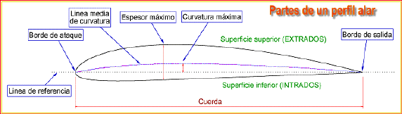
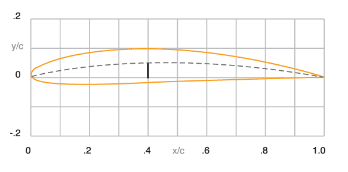
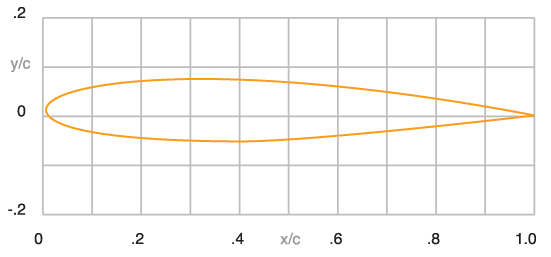
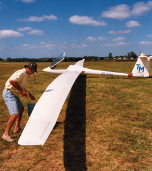

SELECCION PERFILES NACA

Desde un comienzo, los perfiles de ala tomaron la designación de sus creadores. Fue así que aparecieron los Joukovwski, Munk, Clark, Eiffel y las series RAF (Royal Aircraft Factory) y Goettingen (alemana). Pero seguramente la familia más popular fue la estadounidense NACA (National Advisory Committee for Aeronautics), organismo que a fines de los '50 se transformó en la NASA (National Aeronautics and Space Administration). Desde los primeros años de la aviación el NACA se convirtió en el referente de toda investigación aeronáutica en el mundo. A fines de la década del '20 comenzó a estudiar y clasificar los perfiles que se desarrollaron en sus túneles aerodinámicos, y de acuerdo con las características, a agruparlos en familias.
El criterio utilizado por el NACA fue tomar como base las características geométricas del perfil –particularmente la curvatura (curvature) y el espesor (tickness)– y estudiar su influencia a lo largo de la cuerda (chord). Primero apareció la serie de cuatro números; tomemos como ejemplo el perfil 4412, cuyos dígitos se interpretan de la siguiente manera: el primer 4 expresa la flecha máxima de la curvatura en porcientos de la cuerda y al segundo se le agrega un cero para decir que esa curvatura se encuentra al 40% de la cuerda; los dos últimos dígitos son el espesor del perfil, también en porcientos de la cuerda. Veamos la aplicación de este perfil con ejemplo sencillo: en una sección alar de 1 m de cuerda la flecha de la curvatura máxima medirá 4 cm y estará situada a 40 cm desde el borde de ataque, mientras que el espesor máximo tendrá 12 cm

La familia de perfiles NACA con cinco números representó un avance con respecto a la de cuatro, ya que su rendimiento (relación sustentación/resistencia al avance) era superior. Estudiemos la nomenclatura del 23012, uno de los más populares. El 2 significa que la flecha máxima de la curvatura del perfil es del 2% de la cuerda, el 30 expresa el doble de la posición de esa curvatura sobre la cuerda (en este caso será el 15%). Se toma el doble porque esos números ayudan a conocer otros parámetros que ya estudiaremos más adelante. Los dos últimos números representan el espesor máximo, que es del 12%. Cuando apareció esta familia de cinco dígitos comenzó a ser utilizada por aeronaves de fabricación algo más sofisticada, por ejemplo el cuatrimotor de transporte Douglas DC-6 empleaba un perfil como éste

Conforme avanzaron las investigaciones, hacia mediados de los años '40 el NACA lanzó la serie de seis dígitos. Fue una familia revolucionaria ya que dio origen a los famosos perfiles de flujo laminar (laminar flow) de muy baja resistencia aerodinámica. El contorno de estas secciones tiene una distribución de presiones tal que obliga al flujo de aire a mantenerse adherido a la superficie en un extenso tramo de la cuerda, lo que disminuye significativamente el arrastre (recordemos lo visto en el capítulo 1, en donde vimos la importancia de evitar el desprendimiento de la corriente)
Su nomenclatura es más complicada; veamos por ejemplo el perfil 661-212: el primer número indica la serie; el segundo la posición del punto de mínima presión, es decir que en este caso se encuentra al 60% de la cuerda; el tercer dígito nos da la amplitud en términos de coeficiente de sustentación en el que se mantienen las condiciones de laminaridad (+ - 10%). Este porcentaje es conocido popularmente como "pozo de laminaridad" y en la práctica significa la gama de trabajo óptima de la sección. El 2 es el coeficiente de sustentación ideal de la sección mientras que el 12 nos dice que el espesor máximo es del 12%, como en las otras series.
Evidentemente, la aparición de los perfiles laminares (laminar airfoil o laminar section) significaron un enorme avance en las performances de las aeronaves, ya que al mantenerse la corriente de aire laminar sobre una gran parte del extradós e intradós del ala se retarda la formación de torbellinos y por consiguiente la resistencia aerodinámica. Al promediar los años '40 su uso comenzó a generalizarse en los aviones de combate. Por ejemplo, el caza estadounidense North American P-51 Mustang diseñado antes de finalizar la Segunda Guerra Mundial utilizó una sección de este tipo, cuyo uso se extendió a los cazas de reacción que aparecieron después. Los perfiles laminares tienen hoy una variada aplicación. Por ejemplo, sería impensable diseñar un planeador de altas performances sin su uso, o una aeronave de mayores performances que vuele a velocidades superiores a los 500 o 600 km/h. Uno de sus inconvenientes es que requiere precisión desde el punto de vista constructivo, es decir, se deben respetar minuciosamente sus coordenadas y lograr una muy buena terminación exterior. Construir un ala con perfil laminar y utilizar remaches o tornillos que sobresalgan del extradós o intradós no tendría sentido, ya que se perderían todas las ventajas que proporciona la laminaridad.

|